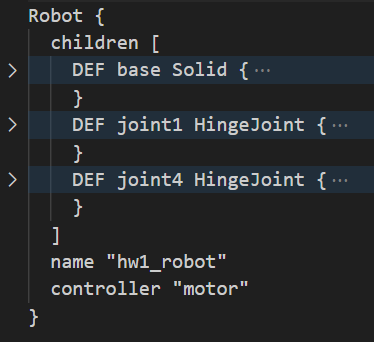
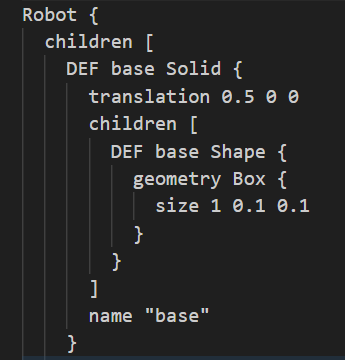
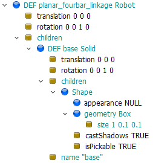
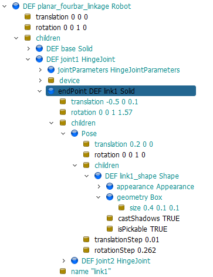
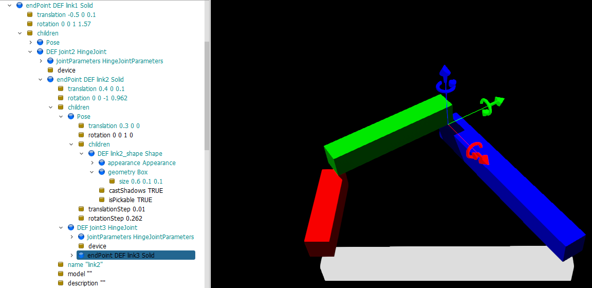
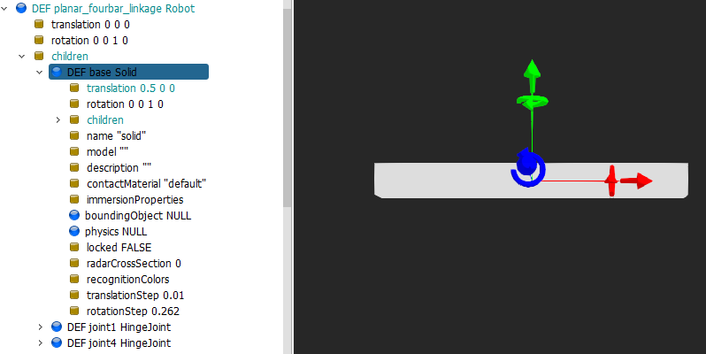
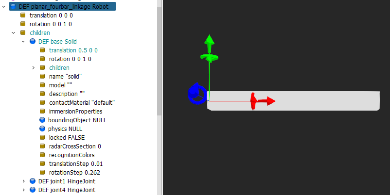
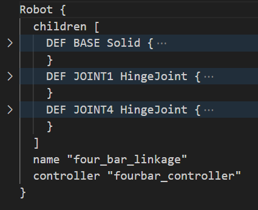
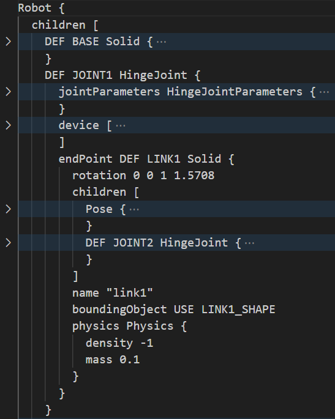
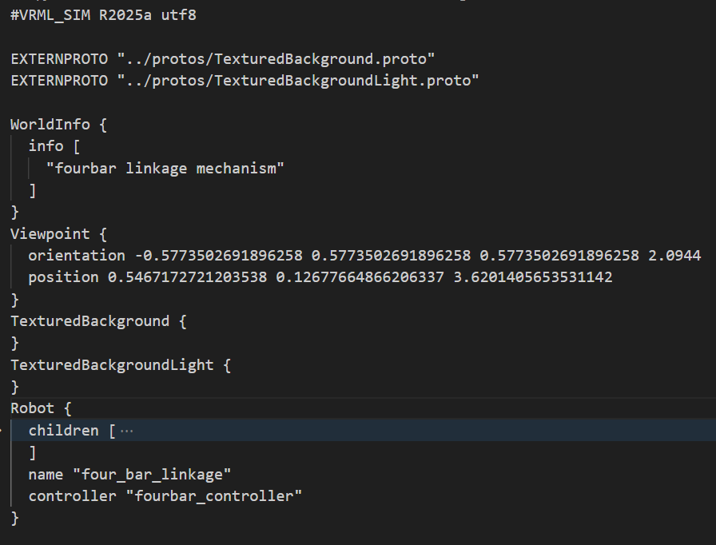

Tutorial <<
Previous Next >> w10
Fourbar
onelink
onelink_webots.7z (直接採 Shape 建模)
fourbar_box_w8.7z (將 joint4 接在 link3 末端, 然後 solidReference 參照到內定的 <static environment>, 表示將 link3 末端的 joint4 直接固定在 base 上 (固定點)
onelink_slvs.7z (利用 Solvespace 繪製組立檔案, 轉為 STL 後, 再分割為 STL 零件與 OBJ 零件後, 將 OBJ 零件 import 進 Blender 確認零件名稱, 各 OBJ 零件分別利用 Solid 與 CadShape 節點建立從屬關係, 最後加入 hinge 旋轉軸與 Python 控制程式, 讓單一機械臂以 30deg/s 速度轉動)
onelink_w_hinge.wbt 直接在場景樹狀結構中定義 Solid (可用於較簡單的零組件系統)
onelink_w_hinge2.wbt 則將各零件以 PROTO 定義為原型節點, 之後在場景中導入後引用 (適合較複雜的零組件系統)
fourbar1
以下利用 box 建立 Webots 平面四連桿場景:
層次結構：
Robot → BASE
Robot → JOINT1 → LINK1 → JOINT2 → LINK2 → JOINT3 → LINK3
Robot → JOINT4 (closed chain 約束)

base shape and coordinate setup:
建立 Box 時的局部座標系統原點位於 Box Shape 中心, 由於 Box x 方向長度 1m, 因此將整體往 x 方向移動長度的一半 (即 0.5m), 可讓隨後定位完成的 link1 依照此座標系統指定旋轉中心.

幾何關係：
所有關節都繞 z 軸旋轉
連桿長度分別為 0.4m、0.6m、0.9m
基座長度為 1m
物理特性：
所有連桿質量為 0.1kg
使用密度為 -1 表示質量優先於密度
馬達最大速度 1rad/s，最大扭矩 100N⋅m
控制系統：
使用 "fourbar_controller" 控制器
包含位置感測器和馬達裝置
fourbar_box.7z
1.

2.

3.

4.

5.

6.

7.

8.

handon1
啟動 Webots 2025a:
啟動可攜程式系統後, 可以在 cmd 命令視窗中執行 webotsw, 就可以啟動 Webots.
建立 Robot 模擬場景:
建立模擬場景可以在既有的 WorldInfo、ViewPoint、TextureBackground 以及 TextureBackgroundLight, 建立一個 Robot 節點.
利用 children 數列節點, 納入子節點:
之後的物件節點都可以在 Robot 節點中的 children 數列節點中建立, Robot 與 Solid 節點中都包含 children 數列節點, 表示這樣的節點可以透過 children 放入更多的子節點, 其中更包括將其他 Robot 與 Solid 節點納入作為子節點.
在 Shape 節點中建立標準物件:
至於 Shape 節點中, 就沒有 children 數列節點的設置, 只能根據其既有的節點屬性進行配置. 相較於 Solid 節點 Shape 節點的功能只能放入對應的標準物件, 例如: 目前這個範例會用到的 Box.
物件的移動與旋轉:
而 Robot 與 Solid 節點, 除了本身具備座標轉換的平移及旋轉術性外, 還能利用其中的 children 數列節點, 加入 Pose 節點進行子節點內的座標轉換, 還可利用 Transform 節點調整物件的 scale.
利用 CAD 繪圖 (Solvespace 或 Siemens NX) 協助機構定位:
本頁面的目的是利用 Webots 的 box 建立一個平面四連桿機構的模擬場景, 機構的尺寸設計必須從 Solvespace 的繪圖開始, 除了選擇各桿件的尺寸外, 還需提供各連桿的初始位置以及連桿方位, 才能透過 HingeJoint 以及 SolidReference 等兩個節點的配置, 完成平面四連桿的封閉機構約束設置.
物件的座標系統:
在 Webots 中建立模擬場景, 很重要的一項工作就是確認每一個物件場景的座標系統, 尤其是在某一物件節點中配置各種 Joint 之後, 隨後接在此 Joint 上的物件都將依據其 parent 座標系統定位.
連接軸樹狀架構與 CoppeliaSim 的差異:
此外 Webots 在配置 Joint 時的樹狀結構與 CoppeliaSim 有很大的差別, CoppeliaSim 的 Joint 物件位階是設定為 parent 物件的子物件, 而 Weobts 場景中的 Joint 節點則必須配置成與其 parent 節點相同位階.
利用 Box 建立平面四連桿模擬場景:
以下的配置圖是希望平面四連桿的固定桿件長度為 1m, 且透過 Top view 視圖觀測時, 會水平置放. 在 Robot 節點中的 children 建立 Solid 時使用 DEF 命名為 base, 隨後若要使用此 Solid, 就可以透過 USE base 引用.
但若此 DEF 命名物件之後, 內部的 Solid 物件自行移動 (例如: 透過 Pose), 則利用 USE base 作為 boundingObject 時, 也必須配合 Pose 移動至 Solid 所在位置. 如此才可在物件的碰撞檢測中, 正確配置物件的實體範圍.
起始座標定位方法一:
為了之後在此固定節點的左側建立 joint1, 因此將 base 平移 0.5m, 以便讓隨後配置的 HingeJoint 可以採用此座標系統進行配置. 但利用滑鼠點選 DEF base Solid 時, 可以發現物件的座標系統仍位於其物件中心:

但若將滑鼠停到 Robot 的節點上, 目前的廣域座標系統已經因為 translation 0.5 0 0 而移動到 base 的最左側, 因此隨後配置的 HingeJoint 將會依照此廣域座標系統進行後續配置:

起始座標定位方法二:
上列做法在一開始就先移動 base 物件, 讓隨後的 Joint1 定位中心可直接位於 base 左端. 若 base 物件不希望移動 (當 base 連桿與其他機構有特定對應位置時), 則隨後的 Joint1 就必須以 base 物件的中心點座標為基準, 然後在此基準建立 link1 物件之後, 先將 link1 移動至 base 最左端後旋轉 90 度, 這時的 x 軸將向上為正, 只要再沿著 x 軸移動 link1 長度的一半, 就可以完成 link1 的定位.
至於採用此方法的 Joint1 參考座標原點是位於 base 的中心點, 因此 link1 以 Joint1 旋轉的 anchor 中心點座標必須設為 -0.5 0 0.
之後的 link2 與 Joint2 的相關設置, 也可以採用先移動物件中心再旋轉至該連桿的起始方位後, 再對機構進行 x 軸方向的移動, 且對應旋轉的 Joint2 anchor 也必須配合設置當下的連桿參考座標系統.
box 平面四連桿的 Robot 節點架構:
在 BASE 物件上設置兩個旋轉軸 (JOINT1 與 JOINT4):
其中的 JOINT1 上將接 link1, link1 上接 JOINT2, JOINT2 上接 link2, link2 上接 JOINT3, JOINT3 上接 link3, 意即從 BASE 上接了三個 joints, 以及三個 links, 形成一個 open chain 機構.
然後在 JOINT4 連接 link3 的設置時, 透過 SolidReference 節點, 指定 link3 作為 solidName 後, 將此條件作為 closed chain 的約束運算.
再加上從 CAD 繪圖中取得的各連桿起始位置, 就可以結合連桿的 physics 與 boundingObject 屬性設置, 完成 Webots 上的平面四連桿場景.

在 BASE 上配置 JOINT1, JOINT1 末端配置 LINK1, LINK1 上再配置 JOINT2 的樹狀架構圖如下:

將 Robot 命名為 four_bar_linkage, 並利用名稱為 fourbar_controller 的控制器進行控制:

fourbar2
Webots 中平面四連桿機構的設置方式：
四連桿結構應該是：
-
第一條運動鏈：
- 從 BASE 出發的 JOINT1
- JOINT1 連接 LINK1
- LINK1 上的 JOINT2 連接 LINK2
- LINK2 上的 JOINT3 連接 LINK3
-
第二條運動鏈（closed chain）：
- 從 BASE 出發的 JOINT4
- JOINT4 的 endPoint 設為 SolidReference
- SolidReference 的 solidName 設為 "LINK3"
這樣的結構是正確的，因為：
- 主要運動鏈（JOINT1 → LINK1 → LINK2 → LINK3）形成一個序列結構
- 閉鎖鏈（JOINT4 → LINK3）通過 SolidReference 連接回主鏈的末端
- 這樣可以形成一個完整的閉環運動結構
基本結構示意：
BASE
├── JOINT1 → LINK1 → JOINT2 → LINK2 → JOINT3 → LINK3
└── JOINT4 ------(SolidReference: "LINK3")--------┘
PROTO 結構：
Robot {
children [
BASE {
...
}
HingeJoint { # JOINT1
endPoint Solid { # LINK1
children [
...
HingeJoint { # JOINT2
endPoint Solid { # LINK2
children [
...
HingeJoint { # JOINT3
endPoint Solid { # LINK3
...
}
}
]
}
}
]
}
}
HingeJoint { # JOINT4
endPoint SolidReference {
solidName "LINK3"
}
}
]
}
上列設置確保：
- 機構能夠正確形成閉環
- 運動學約束能夠正確傳遞
- 物理模擬能夠正常進行
此外，為了使機構運作正常，還需要：
- 正確設置各個 joint 的旋轉軸（axis）
- 準確定義各個 joint 的錨點（anchor）
- 確保所有連桿的物理屬性正確設置
fourbar_slvs.7z
DEF
https://cyberbotics.com/doc/reference/def-and-use
Although it is permitted to name any node using the DEF keyword, there are some exceptions where USE nodes are not valid. A USE node is an exact copy of the corresponding DEF node, and thus no property of a USE node can change independently from the DEF node.
For this reason it is not allowed to insert USE nodes of Solid, Joint, JointParameters, TrackWheel, and BallJointParameters nodes and their derived nodes. Indeed, the ability for identical solids or joints to occupy the same position is useless, if not hazardous, in a physics simulation. To safely duplicate one of these nodes, you can design a PROTO model for this node and then add different PROTO instances to your world.
The same principle applies to Material and Light nodes located in the first child of Charger and LED nodes whose emissive color changes automatically based on the Charger energy and LED setup.
Also the TextureTransform of the first Shape in the Track device with enabled texture animation cannot be a USE node given that the translation values will be automatically updated by Webots while the Track device is moving.
Webots 使用 DEF 和 USE 關鍵字來命名和重複使用節點的限制：
-
DEF 和 USE 節點：
-
某些節點不能使用 USE：
-
有些節點不能作為 USE 節點使用，這些節點包括 Solid、Joint、JointParameters、TrackWheel 和 BallJointParameters 節點以及它們的衍生節點。原因是，在物理仿真中，讓相同的實體或關節出現於相同位置是沒有意義的，甚至會帶來危險。例如，物理仿真需要每個實體或關節能夠獨立運動和改變位置，使用 USE 節點可能會導致錯誤的物理行為。
-
若要安全地重複這些節點，應該使用 PROTO 模型來設計這些節點，並為每個需要的實例創建不同的 PROTO 實例，這樣可以避免重複的節點引起問題。
-
特殊節點的限制：
-
Track 設備的限制：
Forbar Linkage the first link:
#VRML_SIM R2025a utf8
EXTERNPROTO "../protos/TexturedBackground.proto"
EXTERNPROTO "../protos/TexturedBackgroundLight.proto"
WorldInfo {
info [
"fourbar linkage"
]
}
Viewpoint {
orientation -0.17524366601960317 0.20799757991102616 0.9623027924053665 1.7913508311753839
position 1.0571588458938594 -2.502126861220829 1.490364369030099
}
TexturedBackground {
}
TexturedBackgroundLight {
}
DEF FOURBAR Robot {
children [
DEF BASE Solid {
children [
CadShape {
url [
"../split_parts/base.obj"
]
}
]
name "BASE"
}
DEF JOINT1 HingeJoint {
jointParameters HingeJointParameters {
axis 0 0 1
}
device [
RotationalMotor {
name "joint_motor1"
}
]
endPoint DEF LINK1 Solid {
children [
CadShape {
url [
"../split_parts/link1.obj"
]
}
]
name "LINK1"
}
}
]
}
Webots 中平面四連桿機構的設置方式：
四連桿結構應該是：
-
第一條運動鏈：
- 從 BASE 出發的 JOINT1
- JOINT1 連接 LINK1
- LINK1 上的 JOINT2 連接 LINK2
- LINK2 上的 JOINT3 連接 LINK3
-
第二條運動鏈（closed chain）：
- 從 BASE 出發的 JOINT4
- JOINT4 的 endPoint 設為 SolidReference
- SolidReference 的 solidName 設為 "LINK3"
這樣的結構是正確的，因為：
- 主要運動鏈（JOINT1 → LINK1 → LINK2 → LINK3）形成一個序列結構
- 閉鎖鏈（JOINT4 → LINK3）通過 SolidReference 連接回主鏈的末端
- 這樣可以形成一個完整的閉環運動結構
基本結構示意：
BASE
├── JOINT1 → LINK1 → JOINT2 → LINK2 → JOINT3 → LINK3
└── JOINT4 ------(SolidReference: "LINK3")--------┘
PROTO 結構：
Robot {
children [
BASE {
...
}
HingeJoint { # JOINT1
endPoint Solid { # LINK1
children [
...
HingeJoint { # JOINT2
endPoint Solid { # LINK2
children [
...
HingeJoint { # JOINT3
endPoint Solid { # LINK3
...
}
}
]
}
}
]
}
}
HingeJoint { # JOINT4
endPoint SolidReference {
solidName "LINK3"
}
}
]
}
上列設置確保：
- 機構能夠正確形成閉環
- 運動學約束能夠正確傳遞
- 物理模擬能夠正常進行
此外，為了使機構運作正常，還需要：
- 正確設置各個 joint 的旋轉軸（axis）
- 準確定義各個 joint 的錨點（anchor）
- 確保所有連桿的物理屬性正確設置
fourbar_slvs.7z
Tutorial <<
Previous Next >> w10